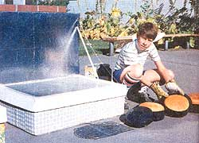
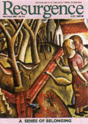
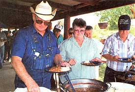
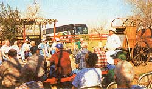
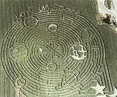

Green Gazette
June/July 2002
Cooking with The Sun
For solar ovens, cooking conditions couldn't be better than during the summer months. Not only does cooking with sunshine mean lower energy costs and cooler temperatures indoors, but many solar oven champions say food simply tastes better.
Practically anything you can cook in a conventional oven can be made with a solar cooker. Solar ovens follow a method similar to slow cookers, so food doesn't bum or dry out. On a clear day, temperatures in a solar oven can reach 300 degrees. Cooking times depend on what goes in the pot. Eggs, rice, vegetables, fish and chicken can take as little as one to two hours on a sunny day. The same conditions can also cook potatoes, bread, beans and most meat within four hours. Large roasts, soups and stews take the longest at five to eight hours. Even a cloudy day has solar cooking potential, as long as there's at least 20 minutes of sun per hour.
Solar ovens come in three models. The most common are box cookers ($200 and up, pictured at right), which trap heat using an angled reflective surface, such as a mirror, aluminum foil or Mylar, and a dark, metal tray bottom. One downside of the box cooker is having to adjust the box's position during long cooking times. The concave reflectors of a parabolic oven cook food twice as fast as a box cooker, but the high price tag ($700) and potential for bums and blindness from the directed rays make them impractical for home use. Panel cookers ($20) combine elements of both models. These ovens concentrate light using flat instead of concave reflectors while an oven roasting bag placed around a black pot acts as the heat trap. At $20, panel cookers are much more affordable than box cookers or parabolic cookers.
You can buy box or panel solar ovens from several U.S. manufacturers or build your own. Solar Cookers International, a nonprofit group in Sacramento, has a comprehensive solar cooking Web site, including detailed instructions for both models. The address is www.solarcooking.org .
-Julie Monahan
More Great Ideas on Good Living
A magazine promoting the "nourishment of soil, soul and society" ought to be right up most Mother Earth News readers' alley. So we recommend you take a look at the beautiful and satisfying Resurgence magazine, founded 35 years ago by Satish Kumar, a former Jain monk.
Resurgence thoughtfully investigates renewable energy, ecological economics, the endangered environment and other ideas on the cutting edge of current thinking. Promoting creativity, ecology, spirituality and frugality, Resurgence argues for politics with principle and science with a soul in beautifully illustrated articles by some of the world's leading writers, such as Jeremy Rifkin, Vandana Shiva and Wendell Berry. Subscriptions are $50 for surface mail ($62 for airmail) and are available at www.resurgence.org or by mail at Resurgence; Rocksea Farmhouse; St. Mabyn, Bodmin; Cornwall PL30 BR, UK.
Resurgence has teamed with the Omega Institute for Holistic Studies to offer a series of annual conferences where visionaries, authors and activists can come together to renew their vision and inspire each other. The second annual Resurgence conference will be held September 5-8 on the Omega campus near Rhinebeck, New York.
Speakers include Thomas Moore, best-selling author of Care of the Soul, Rituals of the Imagination and Soul Mates; Paul Hawken, author of Natural Capitalism, The Next Economy and The Ecology of Commerce; Juliet Schor, author of The Overworked American and The Overspent American; Cathrine Sneed, founder and director of The Garden Project, a program providing job and life training for former prisoners; Frances Moore Lappe, author of Diet for a Small Planet and her new book, Hope's Edge: The Next Diet for a Small Planet (See Page 44); and author, inventor and entrepreneur Gunter Pauli, founder and director of the nonprofit Geneva-based Zero Emissions Research Initiatives.
For information, visit www.eomega.org or call (800) 944-1001.
- K. C. Compton
Agritourism:
Profit from your lifestyle
From Maine to Illinois, buses filled with schoolchildren and conventioneers visit farms to pick a bunch of lavender, go maple sugaring, harvest a personalized pumpkin, pet baby animals or take a picture of grandchildren running through a corn maze. It's called agritourism, and it is providing an alternative source of income for many families. The work is often seasonal and varies depending on what the farm or ranch has to offer tourists.
New York State provides advertising and promotion of agritourism along the 500-mile St. Lawrence Seaway Trail. Some Northeast farmers offer bed and breakfast accommodations for skiers or hikers. The western
United States with its vast mountain ranges and rugged natural scenery specializes in ranching, camping, trail rides, hunting and fishing, large animals and the chuckwagon.
After surveying Texas farm entertainment opportunities, Texas A&M University converted pan of its 2,700-acre ranch near Alice, Texas. Dubbed LaCopita Ranch, it's the first university-connected facility for training landowners and managers for agri-tourism. According to Miles Phillips, the program includes economic training and preparation for jobs on ranches where the owners may want to develop an ecotourism enterprise, but not manage it themselves.
LaCopita Ranch started offering tours this spring. Hiking through native "South Texas mixed brush," tourists see white-tailed deer, javelina, bobwhite quail, doves and numerous nongame species. LaCopita plans half-day guided tours of the ranch for groups, as well as overnight stays for groups and individuals, with bunkhouse accommodations, a short guided program and free time to explore the ranch by bicycle or on foot, and a chance to hear country music nearby.
-Katherine Adam
Resources:
E ntertainment Farming and Agritourism
www.attra.org/attra-pub/entertainment.html
(800) 346-9140
Miles Phillips, Extension Ecotourism
Specialist at LaCopita Ranch
mdphillips@ag.tamu.edu
agfacts.tamu.edu/-mphillips
(361)265-9203
The Farm & Ranch Recreation Handbook
uwadmnweb.uwyo.edu/RanchRecr
The MAiZE, corn maze makers
2361 S. Goodnight Drive
Springville, UT 84663
(801) 4891118
www.cornfieldmaze.com
La Mota Ranch
P.O. Box 373
Hebbronville, TX 78361
www.lamotaranch.com
How to survive Lightning
People hit by lightning suffer both extreme heat and damaging electricity from the bolt. Few survive. Direct hits are not the only danger however. In open terrain, nearby strikes also can electrocute. But it is possible to survive unscathed-by following a special rule.
The best way to avoid lightning is to take shelter. But sometimes we're caught in open terrain by sudden lightning, with no safe haven in sight. Most of us are tempted to hit the dirt. Of course, being a tall target is bad, but electricity flowing horizontally from head to foot on a person lying on the ground can be lethal.
Your best bet for survival: Crouching way down with feet together and hands off the ground. Sound a little weird (and awkward)? The answer is in the physics.
When a wandering cow is killed by nearby lightning (which strikes the ground or a lone tree), ground current traveling from the strike point is usually blamed. The main culprit is voltage: the electrical force that causes ground current to flow. Current is merely electrons bumping each other along an electrical path. The higher the voltage, the greater the current flow.
Lightning striking earth is the result of a stormy sky-which electrifies clouds with many million volts. When a bolt of lightning hits the ground or trees, the bolt sends current from the strike point (or tree base) out over a sizeable circular area. This happens because the bolt distributes a very high voltage across that surface-but just for an instant. (Close to the strike, that can be many thousands of volts per square foot!) Cows roaming the area (especially those facing directly in line with the strike point) receive a lethal jolt between their widely separated legs.
For anyone standing near a lightning strike, the distance between their feet is also critical. Humans might appear safer than cattle-yet 600 or 800 volts flowing between soggy shoes is just like stepping on the third rail of an electric railway!
During a thunderstorm, nobody should be in open terrain or under lone trees. A lone tree is the tallest electrical path in an area and, if struck, a tremendous voltage fans out from the tree's base. For a golfer near the strike, with feet 10 inches apart, it could be curtains. (Going into dense woods is somewhat better; inside an automobile is best.)
If you can't get to shelter, make yourself as small as possible and limit the amount of area you cover. So don't lie down or stand up. Become a ball instead.
-Walter S. Andariese
Fuel from Straw
Ethanol fuel was hailed as the savior of both farm country and the environment-in 1992. Since its introduction, ethanol hasn't exactly stolen the renewable energy spotlight.
The problem isn't performance: Ethanol does burn cleaner than petroleum products. For environmentalists, the problem lies with production.
Mostly made from corn, ethanol production eats up a good deal of fuel. U.S. cornfields are addicted to oil: oil for pesticides, oil for fertilizers, oil for planting and oil for harvesting. All that oil use takes a little of the shine off ethanol's clean record.
But corn isn't the end-all and be-all of alcohol fuels. The logen Corporation of Ottawa, Ontario, has developed a process that produces ethanol from much less energy-intensive sources, such as wood chips and straw. The process is very similar to ethanol production from corn-or, for that matter, alcohol made for human consumption.
Logen's demonstration plant went online earlier this year. The plant turns straw from nearby wheat and barley fields into ethanol that is then sold to local reblenders. The plant is currently the only one of its kind in the world, although logen is looking for places to expand, including the Canadian prairie, U.S. Midwest and the United Kingdom.
For more information, go to logen's Web site at www.logen.ca.
-Sarah Beth Cavanah
|
 Tourists at La Mota Ranch in Texas enjoy by-the-day ranchwork and homecooked meals. |
 Agritourism can be an ongoing operation or limited to specific dates for larger crowds. |
 Although this maze covers more than 20 acres in Idaho, mazes on a much smaller scale also can be profitable. |
|
 |
 |
 |